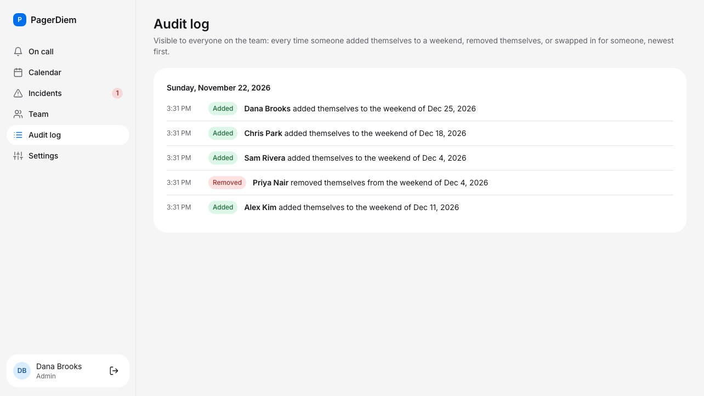

Weekend on-call,
without the enterprise bill.
A fair rotation, Slack paging with escalation, a shared calendar and sign-in locked to your Google Workspace. One Node.js process. Self-hosted. MIT licensed.

What it does
The parts of on-call a small team actually uses.
Fair weekend rotation
Two people per weekend, taking turns so everyone gets the same share. Admins are optional.
Self-service
Add yourself to any weekend or remove yourself. Weekends below target are flagged “needs cover”.
Swap with undo
Take someone's spot from the calendar. Ten seconds to undo before anyone is notified.
Slack paging
Page from the web, /page in Slack or the API. DMs with Acknowledge and Resolve buttons.
Escalation
Re-page every 5 minutes, page the backup at 15, @channel at 30.
Calendar & audit log
Month view, a Google Calendar feed, and a public log of every add, remove and swap.
Your team only
Google sign-in restricted to your Workspace domain. Slack requests limited to your workspace.
Roles
Engineers go on call. Non-technical teammates can watch and raise an alert, never paged.


Deploy it
Run exactly one instance; the scheduler lives inside the web process.
Render + Neon + Slack
Docker web service on Render, Postgres on Neon, plus the Slack app and Google sign-in. About 30 minutes.
AWS: ECS Fargate + RDS
Always-on task behind an ALB, managed Postgres, secrets in Secrets Manager, logs in CloudWatch.
Or try it locally in a minute
git clone https://github.com/PerDiemInc/pagerdiem && cd pagerdiem
cp .env.example .env
npm install && npm start # http://localhost:3000 (dry-run, no keys needed)